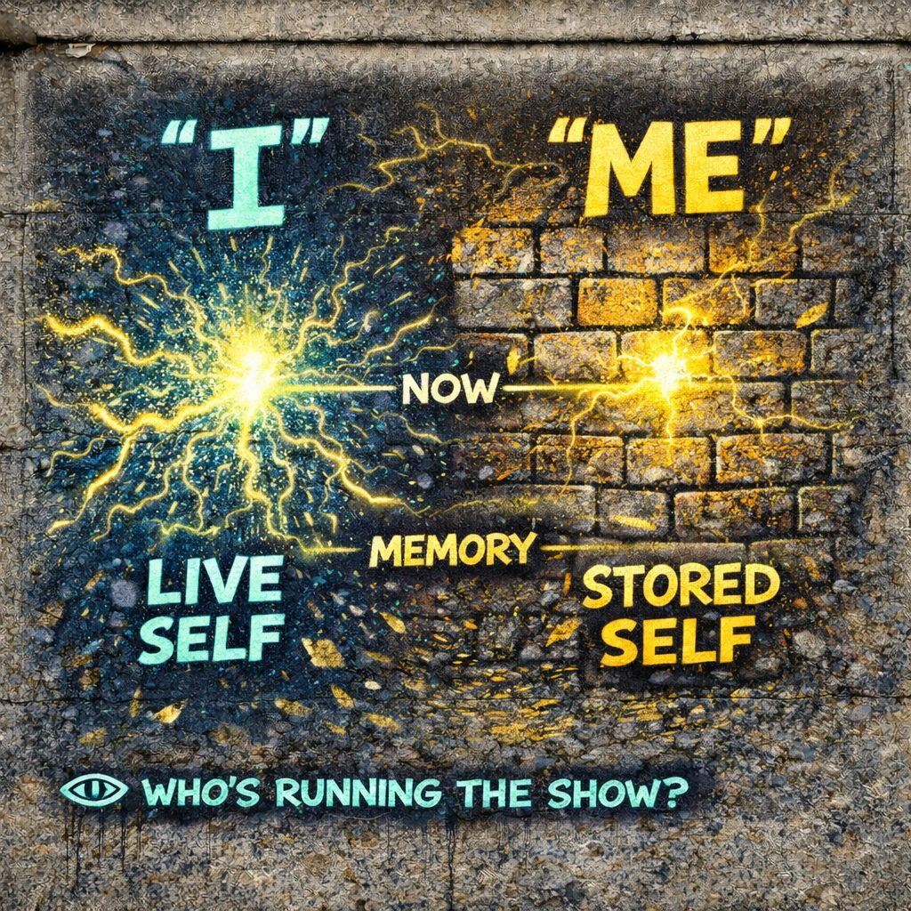

🧠 “I” vs “Me”
The present appears as ‘I.’”
⚡ “I” sparks
🧱 “Me” answers
🎭 You act
👁️ Notice the gap…
and you choose who runs
📍 Foundation
Back to George Herbert Mead for a moment.
Mead split the self into two parts:
“Me”
the social self: structured, shaped, expected
“I”
the spontaneous self: responding, unpredictable, alive
That is the original model.
IPT turns the contrast into a live system you can actually watch happening.
⚙️ Core Definition (IPT)
⚡ “I”
live response in real time
🧱 “Me”
stored patterns from past interactions
Or sharper:
🧱 “Me” has already happened
📡 Where They Sit In The Chain
- “I” lives closest to signal + velocity
- “Me” lives at role + identity stabilization
🧠 What “Me” Is Made Of
“Me” is built from:
- past reactions
- learned roles
- internalized expectations, also known as the generalized other
- repeated meanings
- stabilized identity patterns
⚡ What “I” Feels Like
“I” shows up as:
- immediate response
- curiosity
- impulse
- fresh perception
- unscripted reaction
🎭 How They Interact
Every moment is a negotiation:
⚡ “I” begins to respond
🧱 “Me” checks it against stored patterns
🎭 Adjustment happens
🧠 final behavior emerges
🎯 Example
Someone says something unexpected.
“I”
“Wait, that’s interesting…”
“Me”
“People like us don’t respond like that.”
either curiosity continues
or identity overrides it
⚠️ When “Me” Dominates
This is the common modern condition.
- reactions become predictable
- roles engage automatically
- identity defends itself
- flexibility decreases
Life becomes repetition of known patterns.
⚠️ When “I” Is Unchecked
Less common, but important.
- impulsivity
- lack of coordination
- social friction
- unstable identity
⚖️ Healthy Balance
You want both:
🧱 “Me”
stability, memory, coordination
⚡ “I”
flexibility, creativity, adaptation
but “Me” doesn’t crush it instantly.
🌐 Generalized Other → “Me”
The generalized other lives inside “Me.”
It provides:
- expectations
- norms
- predicted reactions
it is often society speaking through memory.
⚡ Velocity → Crushing “I”
High velocity environments:
- reduce time for “I”
- activate “Me” faster
- skip reflection
“I” barely appears.
🧩 Meaning Lock → Feeds “Me”
Repeated meanings become stored.
That storage becomes:
Every time meaning locks quickly, “Me” gets stronger.
🎭 Role-Taking → Builds “Me”
Every role you repeat:
- gets stored
- gets refined
- gets easier to access
👁️ Observation → Protects “I”
Observation is what allows “I” to survive.
Without Observation
“Me” takes over automatically
With Observation
“I” gets a moment to exist
🔍 How To Spot The Difference
“Me” Feels Like
- “this is who I am”
- “this is how I respond”
- “this is what we do”
- familiar
- stable
- automatic
“I” Feels Like
- “wait…”
- “what if…”
- “I’m noticing something”
- fresh
- uncertain
- alive
⚠️ Modern Distortion
In high-pressure environments:
- “Me” gets reinforced constantly
- “I” gets less airtime
- identity becomes rigid
- reaction becomes predictable
🔓 IPT Intervention Point
IPT doesn’t eliminate “Me.”
It creates space for “I.”
That question alone:
- slows identity reaction
- allows alternative responses
- reintroduces flexibility
🔥 IPT Edge
Mead Gives
the structure of the self
IPT Adds
the timing battle between live response and stored identity
👁️ Final Distillation
🧱 “Me” is the memory
And most of life is deciding which one runs.
The present appears as “I.”
⚡ “I” sparks
🧱 “Me” answers
🎭 You act
👁️ Notice the gap…
and you choose who runs
🔗 Explore More
If you want to see how these concepts connect to the rest of IPT {Symbolic Interactionism Segment}, check out the links below: